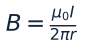
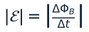

Official reference · AP Physics 2
Relevant equations
The seven magnetism equations reproduced in the same mathematical notation and order as the College Board reference sheet, plus four relevant constants.
Magnetism
The expressions below are from the official AP Physics 2 equation sheet. The equation images are vector graphics, readable offline.
Magnetic force on a moving charge · Topic 12.2
Magnetic field around a long, straight current-carrying wire · Topic 12.3

Magnetic force on a current-carrying wire · Topic 12.3
Magnetic flux (vector form) · Topic 12.4
Magnetic flux (magnitudes and angle) · Topic 12.4
Magnitude of induced emf (Faraday’s law) · Topic 12.4

Motional emf · Topic 12.4
Relevant constants
Vacuum permeability · μ₀
Elementary charge · e
Proton mass · mₚ
Electron mass · mₑ
SI units used in Unit 12 include tesla (T), ampere (A), coulomb (C), meter (m), second (s) and volt (V).